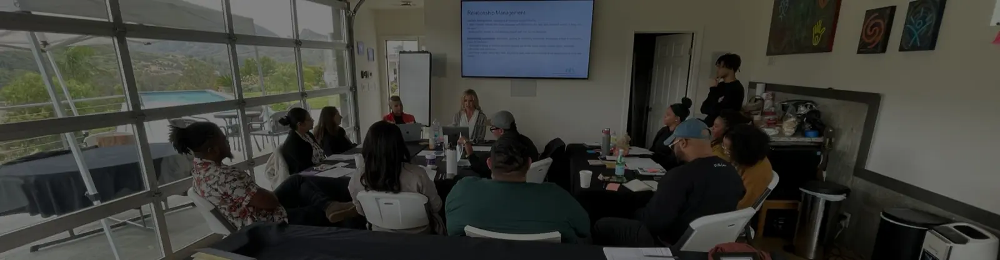

Frequently Asked Questions
Program Details
What is the program’s structure and duration?
The LeaderFlow Development program is a 7-month curriculum focusing on personal growth, increased self-awareness and awareness of others, strengthened community, and improved skills in management and leadership at no cost to participants.
How much time will I need to commit?
Participants are expected to commit to the 7-month program, which includes 7 monthly sessions. Each session is held on a Friday at a designated location from 9:00 AM to 5:00 PM. Participants will also attend a Kick-Off Orientation event (typically held the Thursday before the first program session from 6:00 PM to 8:00 PM) and a program wrap session.
Where will the program take place (in-person or online)?
Each mandatory session will take place in-person.
How many people are accepted into the program per cohort?
Each cohort consists of 12–15 participants.
Eligibility and Application
Who is eligible to participate?
Mid-career professionals with a minimum of 5 years of experience and a demonstrated interest and commitment to advancing leadership and innovation within the AEC industry, a focus on personal and professional growth, and availability for in-person attendance at all sessions.
How do I apply, and what is the selection process?
Prospective participants can apply directly via our website (www.leaderflow.org) by completing the application form.
- The application period for our 2026 Cohorts in New York, Chicago, Seattle, Los Angeles and Houston are open beginning on November 19, 2025. Applications will close January 4, 2026 at 6:00PM PST
- Apply Here: https://leaderflow.org/leaderflow-development-program/application-form/
Please subscribe to our mailing list to stay informed. To subscribe, visit https://leaderflow.org/connect-with-us/, scroll to the bottom, and click the subscribe button to fill in your contact information.
Are there prerequisites or prior experience required?
Yes, applicants need at least 5 years of professional experience and a demonstrated commitment to fostering an inclusive and innovative industry.
Benefits and Outcomes
What skills and knowledge will I gain?
You will develop trust-building and emotional intelligence skills, enhance self-awareness through assessments, and learn effective communication for high-stakes conversations. You’ll explore leadership strategies, work-life integration, financial operations in the AEC industry, and client development techniques. The program also provides coaching on strengths-based leadership, conflict resolution, and fostering an inclusive workplace culture.
How will the program help me advance my career?
The program equips you to lead projects, build strong professional relationships, and align personal values with career goals. You’ll gain insights into AEC industry operations, develop a growth mindset, and receive mentorship from seasoned leaders to refine your leadership style and achieve long-term success.
Will I receive a certificate or credential upon completion?
Yes, you will receive a certificate of completion. Participants can also earn credits toward continuing education with the American Institute of Architects (AIA).
Cost and Sponsorship
What is the cost of the program, and are there scholarships or financial assistance?
There is no cost to participants associated with the program. Thanks to the generosity of sponsoring organizations, participants will incur no cost to participate in the program.
Networking and Mentorship
Will I have opportunities to network with peers and industry leaders?
Yes, the program provides ample opportunities to connect with peers and established AEC industry leaders through interactive sessions, coaching, and mentorship.
Program Experience
What types of activities or assignments are included (e.g., workshops, group projects)?
The program includes workshops and self-assessments (e.g., CliftonStrengths and EQ assessments), interactive coaching sessions with trained facilitators and AEC industry leaders.
Are there any assessments or exams?
No formal exams are included, but participants complete self-assessments and receive feedback to enhance self-awareness and track progress throughout the program. There will be pre-work and homework assignments required for all participants to apply the learned lessons from each session.
Support and Resources
What resources or materials will be provided?
Participants will receive self-assessment tools (e.g., CliftonStrengths and EQ assessments), program guides, templates for project leadership and vision planning, and curated learning materials from AEC industry leaders.
Will there be access to program facilitators or coaches for one-on-one support?
Yes, participants will have access to program facilitators and coaches for personalized guidance, feedback, and support throughout the program.
Post-Program Opportunities
What support is available after the program ends?
Graduates who successfully complete the program will be invited to join the FloWork Alumni Network, which offers opportunities to reconnect with past cohort members, expand their professional network, mentor future leaders, and engage in ongoing learning and meaningful discussions about leadership and innovation in the AEC industry. Alumni can also contribute through advocacy, volunteering, or supporting future programs.
How can I leverage the program experience in my current role?
You can apply the leadership, communication, and trust-building skills gained in the program to enhance team collaboration, lead projects more effectively, and strengthen relationships with colleagues and clients. Additionally, the insights into work-life integration and personal strengths can help align your current role with your long-term career vis